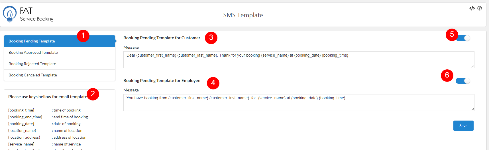

SMS Template
To send sms notification, you need config sms setting at here
Every time a customer create an appoiment, an sms will be sent to customers and employees
It have four notification types for customer and employee:Appointment Pending, Appointment Approved, Appointment Rejected, Appointment Canceled
- Appointment Pending: At default, when client create appointment, it will be have pending status and this sms will be send when the appointment is created.
You will need to manual confirm it in back-end by use update appointment status
- Appointment Approved:This is sms will be send when admin update appointment status to approved, or when client create appointment from frontend and you have set 'Default Appointment Status' as approved in General setting
- Appointment Rejected: This is sms will be send after the appointment is rejected by admin
- Appointment Canceled: This is sms will be send after the appointment is canceled by admin
To setting sms template, please do follow:
- Log into your WordPress admin panel.
- Navigate to FAT Services Booking » SMS Template.
- Select and setting template for each appointment status .

SMS template.
- 1. Template:At here you can switch template for each appointment status (Pending, Approved, Rejected, Canceled)
- 2. Keys: This is keys that you can use in sms template. It will be replace value when sent sms
- 3. Customer template: This is section what you can config sms for customer. You can endable/disable send sms for customer via green switch button (5) .
- 4. Employee template: This is section what you can config sms for employee. You can endable/disable send sms for customer via green switch button (6) .